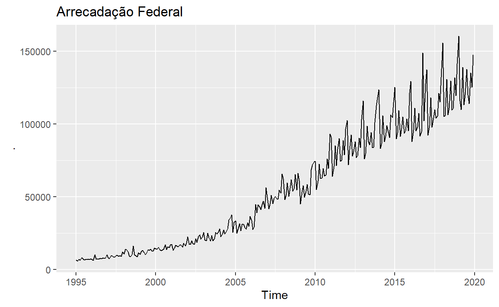
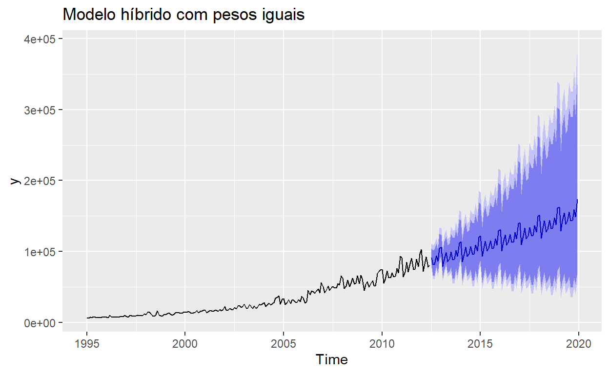
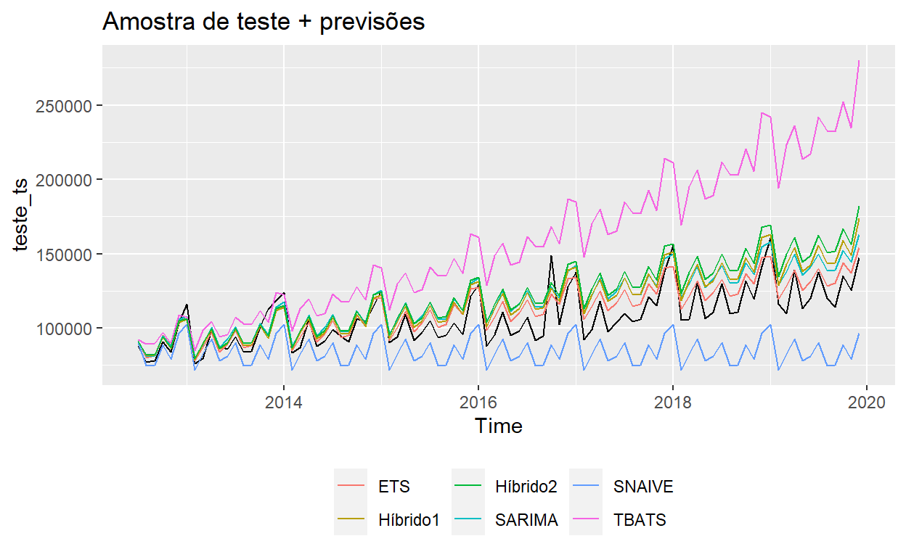

Nesse post é analisado como se comporta a combinação de modelos de séries temporais na previsão da série de tempo Arrecadação Federal. Neste estudo é visto que a simples ponderação de igualitária entre os modelos pode melhorar as previsões quando comparada com o modelo benchmark.
No âmbito das séries temporais, diversos modelos são propostos com o intuito de melhorar as previsões das variáveis, tanto para o curto prazo, como para o longo prazo . Cada um destes modelos aborda de forma diferente os componentes das séris temporais, a saber:
Tendência: capta elementos de longo prazo relacionados com a série de tempo;
Sazonalidade: capta os padrões regulares da séries de tempo;
Ciclo: caracterizado por longas ondas, mais ou menos regulares, em torno de uma linha de tendência, o ciclo não possui intervalos fixos, o que o diferencia da sazonalidade;
Resíduo: são flutuações inexplicáveis, captando todos os efeitos que não foram incorporados pela série de tempo nos componentes anteriores.
Neste caminho, alguns estudos identificam que a combinação de previsões (em inglês, ensenmble forecasting) podem apresentar resultados mais precisos do que as previsões dos modelos em separado. Como forma de estudar este teoria, neste post será abordado a combinação de modelos de previsões atráves do pacote do R, forecastHybrid.
A série de tempo utilizada será a Arrecadação federal, que é a soma das receitas administradas pela Receita Federal com as receitas administradas por outros órgãos, obtida através do pacote ipeadatar, uma alternativa para a utilização da base de dados do Instituto de Pesquisa Econômica Aplicada (IPEA).
library(dplyr)
library(ggplot2)
library(forecast)
library(ipeadatar) # para baixar a série de arrecadação
library(forecastHybrid) # pacote para
# código da variável Arrecadação Federal == SRF12_TOTGER12
arrecadacao <- ipeadata(code = 'SRF12_TOTGER12', language = 'br') %>%
filter
# transformando em série temporal
arrecadacao_ts <- arrecadacao %>%
filter(date < '2020-01-01') %>%
select(value) %>%
ts(., start = c(1993, 1), frequency = 12)
arrecadacao_ts %>%
autoplot()

split <- TSstudio::ts_split(ts.obj = arrecadacao_ts, sample.out = 30)
treino_ts <- split$train
teste_ts <- split$test
Vários modelos de previsão são extremamente simples e bastante efetivos, em que, diversas vezes são utilizados como benchmark para comparação com outros modelos de previsões.
O método SNAIVE (seasonal naive, ou, em português, método sazonal ingênuo) define cada previsão para ser igual ao último valor observado da mesma estação, por exemplo, o mesmo mês do ano anterior, sendo definido matematicamente por:
\[ y_{y} = y_{t-m} + z_{t} \] em que, \(z_{t}\) é um termo de erro normal iid e o subscrito \(m\) representa o período de sazonalidade considerado. Assim:
Os modelos ETS, métodos de suavização exponencial, são uma família de modelos de séries temporais que consistem em um componente de nível, um componente de tendência, um componente sazonal e um termo de erro. Cada modelo consiste em uma equação de medição que descreve os dados observados e algumas equações de estado que descrevem como os componentes ou estados não observados (nível, estado, sazonalidade) mudam ao longo do tempo, sendo conhecido como modelos de espaço de estados (state space model).
As previsões produzidas por métodos de suavização exponencial são médias ponderadas de observações anteriores, com os pesos decaindo exponencialmente à medida que as observações envelhecem, ou seja, quanto mais recente a observação, maior o peso associado. Critérios de informação como o AIC, AICc e o BIC são utilizados para determinar qual dos modelos ETS é mais apropriado para uma determinada variável.
modelo_ets <- ets(treino_ts, additive.only = T)
modelo_ets
ETS(A,A,A)
Call:
ets(y = treino_ts, additive.only = T)
Smoothing parameters:
alpha = 0.2333
beta = 0.0026
gamma = 0.5065
Initial states:
l = -503.2402
b = 260.7
s = 7256.51 -822.5345 3899.512 -3343.411 -3150.758 796.2271
-2243.694 -3893.926 2895.186 -3108.885 -5968.506 7684.279
sigma: 4650.172
AIC AICc BIC
6653.980 6656.198 6716.601 O modelo mais apropriado para a variável arrecadação foi o ETS(A,A,A), que representa o método de Holt-Winter com erros aditivos, (para mais classificações, ver Forecasting: Principles and Practice. O método de Holt-Winter com erros aditivos é representado matematicamente a seguir:
\[ y_{t} = l_{t-1} + b_{t-1} + s_{t-m} + \epsilon_{t} \] \[ l_{t} = l_{t-1} + b_{t-1} + \alpha\epsilon_{t} \] \[ b_{t} = b_{t-1} + \beta\epsilon_{t} \] \[ s_{t} = s_{t-m} + \gamma\epsilon_{t} \]
em que, \(l_{t}\) é o componente de nível, \(b_{t}\) representa a tendência e \(s_{t}\) é o componente sazonal. A previsão desse modelo é dada por:
Uma metodologia bastante utilizada na análise de séries temporais é conhecida como abordagem de Box e Jenkins, que consiste em ajustar modelo ARIMA a um conjunto de dados usando como estratégia para construção do modelo um ciclo iterativo, no qual a escolha da estrutura do modelo é baseada nos próprios dados. O modelo ARIMA pode ser descrito matematicamente como:
\[ Y_{t} = c + \alpha_{1} Y_{t-1} + ... + \alpha_{p} Y_{t-p} + \epsilon_{t} + \theta_{1} \epsilon_{t-1} + ... + \theta_{q} \epsilon_{t-q} \]
em que, \(\alpha_{i}\) são os parâmetros da parte auto-regressiva do modelo, \(\theta_{i}\) são os parâmetros da parte de média móvel e \(\epsilon\) são os termos de erro. Modelos ARIMA são capazes também de modelar séries que apresentam um componente sazonal, sendo descrito como: \(ARIMA (p,d,q)(P,D,Q)_{m}\), em que o primeiro parênteses se refere à parte não sazonal do modelo e o segundo, à parte sazonal, com \(m\) correspondendo ao número de períodos sazonais. Para a série tmeporal de Arrecadação Federal, temos:
modelo_arima <- auto.arima(treino_ts, stepwise = F,
allowdrift = T, lambda = NULL)
modelo_arima
Series: treino_ts
ARIMA(0,1,4)(0,1,1)[12]
Coefficients:
ma1 ma2 ma3 ma4 sma1
-0.6420 -0.1418 0.1064 -0.1180 -0.4771
s.e. 0.0599 0.0689 0.0667 0.0585 0.0579
sigma^2 = 20026531: log likelihood = -2760.43
AIC=5532.86 AICc=5533.17 BIC=5554.69O TBATS usa uma combinação de termos de Fourier com um modelo de espaço de estados (state space model) de suavização exponencial e uma transformação Box-Cox, de forma automatizada.
modelo_tbats <- tbats(treino_ts)
modelo_tbats
TBATS(0.404, {5,1}, 0.978, {<12,5>})
Call: tbats(y = treino_ts)
Parameters
Lambda: 0.403682
Alpha: 1.057625
Beta: 0.0632135
Damping Parameter: 0.978165
Gamma-1 Values: 0.001127559
Gamma-2 Values: 0.0009261788
AR coefficients: -0.928473 -0.672951 -0.369444 -0.343473 -0.415237
MA coefficients: 0.439634
Seed States:
[,1]
[1,] -12.6632706
[2,] 0.3005753
[3,] 2.7125562
[4,] 1.2970781
[5,] 0.7702674
[6,] 5.1179036
[7,] 0.6989105
[8,] -1.9641471
[9,] -2.5664798
[10,] -2.9835088
[11,] -2.5669873
[12,] -1.1876519
[13,] 0.0000000
[14,] 0.0000000
[15,] 0.0000000
[16,] 0.0000000
[17,] 0.0000000
[18,] 0.0000000
attr(,"lambda")
[1] 0.4036825
Sigma: 7.147068
AIC: 6423.933O primeiro método observado das combinações de modelos irá utilizar pesos iguais para cada um dos modelos considerados que, segundo os criadores do pacocte, é o que tem se mostrado robusto e melhor em muitos casos quando comparado ao método de se dar maior peso a modelos com melhor desempenhos dentro da amostra.Assim:
modelo_hibrido_1 <- hybridModel(
treino_ts,
# a == auto.arima, e == ets, t == tbats, z == snaive
models = 'aetz',
# argumentos para garantir que seja igual ao modelo obtido individualmente
e.args = list(additive.only = T),
a.args = list(stepwise = F, allowdrift = T, lambda = NULL),
# peso de cada um dos modelos nas previsões
weights = 'equal'
)
modelo_hibrido_1
Hybrid forecast model comprised of the following models: auto.arima, ets, tbats, snaive
############
auto.arima with weight 0.25
############
ets with weight 0.25
############
tbats with weight 0.25
############
snaive with weight 0.25 prev_hibrido_1 <- forecast(modelo_hibrido_1, h = length(teste_ts))
prev_hibrido_1 %>%
autoplot()+
ggtitle('Modelo híbrido com pesos iguais')

O segundo modelo híbrido considerado irá utilizar o método de erros de validação cruzada (cross validation), que devem produzir as melhores previsões, porém, com um custo computacional mais elevado na hora da estimação do modelo.
modelo_hibrido_2 <- hybridModel(
treino_ts,
models = 'aetz',
e.args = list(additive.only = T),
a.args = list(stepwise = F, allowdrift = T, lambda = NULL),
weights = 'cv.errors',
# funções usadas quando weights = cv.errors
cvHorizon = 6,
)
modelo_hibrido_2
Hybrid forecast model comprised of the following models: auto.arima, ets, tbats, snaive
############
auto.arima with weight 0.415
############
ets with weight 0.104
############
tbats with weight 0.198
############
snaive with weight 0.283 Graficamente, todos os modelos estimados podem ser observados a seguir:
autoplot(teste_ts)+
autolayer(prev_snaive$mean, series = 'SNAIVE')+
autolayer(prev_ets$mean, series = 'ETS')+
autolayer(prev_arima$mean, series = 'SARIMA')+
autolayer(prev_tbats$mean, series = 'TBATS')+
autolayer(prev_hibrido_1$mean, series = 'Híbrido1')+
autolayer(prev_hibrido_2$mean, series = 'Híbrido2')+
ggtitle('Amostra de teste + previsões')+
theme(legend.position = 'bottom',
legend.title = element_blank())

Outra forma de avaliar os modelos estudados é através das medidas de acurácia, que podem utilizar diferentes métricas, deste modo:
acuracia <- data.frame(
rbind(
accuracy(teste_ts, prev_snaive$mean),
accuracy(teste_ts, prev_ets$mean),
accuracy(teste_ts, prev_arima$mean),
accuracy(teste_ts, prev_tbats$mean),
accuracy(teste_ts, prev_hibrido_1$mean),
accuracy(teste_ts, prev_hibrido_2$mean)
),
row.names = c('Snaive', 'ets', 'Sarima', 'tbats', 'hibrido1', 'hibrido2')
)
acuracia %>%
knitr::kable()
| ME | RMSE | MAE | MPE | MAPE | ACF1 | Theil.s.U | |
|---|---|---|---|---|---|---|---|
| Snaive | -11116.042 | 15953.456 | 14830.829 | -11.017866 | 13.514349 | -0.0180539 | 0.6120788 |
| ets | -4637.242 | 8657.265 | 7284.705 | -4.058810 | 5.973454 | 0.0374870 | 0.4151768 |
| Sarima | -4554.419 | 8255.262 | 7000.234 | -3.962582 | 5.749364 | 0.0605719 | 0.4118826 |
| tbats | -13571.459 | 17010.999 | 13992.936 | -12.096571 | 12.459068 | 0.2073856 | 1.7004000 |
| hibrido1 | -8803.678 | 11863.537 | 10381.832 | -7.796458 | 8.987366 | 0.1273731 | 0.6065432 |
| hibrido2 | -8579.808 | 11769.092 | 10427.972 | -7.646188 | 9.018947 | 0.1079053 | 0.5825703 |
Para os modelos analisados, identifica-se através do Erro Percentual Absoluto Médio - MAPE, que a combinação de modelos proporciona previsões melhores do que o modelo benchmark SNAIVE e do que o modelo TBATS, entretanto, os modelos SARIMA e ETS obtêm previsões mais próximas, na média, dos verdadeiros resultados observados.
Desta análise inicial, temos que, para a Arrecadação Federal, com a combinação de modelos de séries temporais podemos obter previsões com maior acurácia do que determinados métodos, entretanto, os modelos Arima e ETS proporcionaram menores métricas de acurácia. Como passo seguinte a esta análise, pode-se verificar a melhor seleção de modelos para combinação, bem como, a utilização de outros modelos não existentes no pacote forecastHybrid, demandando um trabalho um pouco maior na parte de programação.